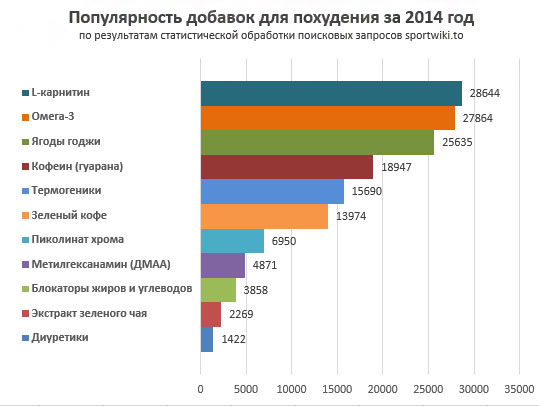

Жиросжигатели, или сжигатели жира - это вид спортивного питания или специальные препараты, которые созданы для редукции лишних жировых отложений. Жиросжигатели способствуют снижению массы тела, делают мышцы более рельефными, позволяют лучше концентрироваться на упражнениях и облегчают тренировки.
Основные механизмы действия жиросжигателей: стимуляция обмена веществ в организме, подавление аппетита, снижение всасывания жиров и углеводов из пищеварительного тракта, блокирование синтеза жира в жировой ткани и выведение лишней жидкости. Главным образом, жиросжигатели ускоряют расщепление жировых молекул и превращают жир в свободную энергию, увеличивая ее расход.
Жиросжигатели предназначены для людей, которые занимаются спортом и хотят уменьшить содержание жира в организме. Действие жиросжигателей реализуется во время тренировок при условии соблюдения диеты. Если же потребление жиросжигателей не совмещать с тренировками и правильным питанием, то эффект будет гораздо слабее, поэтому людям, ведущим малоподвижный образ жизни с дефектами питания, применять их нет смысла.
В настоящее время магазины спортивного питания представляют широкий выбор жиросжигателей с самыми разнообразными составами и механизмами действия. К выбору жиросжигателя нужно подходить серьезно, так как для каждого человека подходят определенные жиросжигатели, другие могут быть менее эффективны и даже вредны для здоровья.

Наиболее часто жиросжигатели содержат следующие ингредиенты:
- Кофеин
- L-карнитин
- Гуарана
- Метилгексанамин (ДМАА)
- Пиколинат хрома
- Хитозан
- Экстракт зеленого чая
- Синэфрин
- Нарингин
- PEA (фенилэтиламин)
- Тирамин
- Омега-3 жирные кислоты
- Допамин
- Кетон малины
- Зеленый кофе
- Ягоды Годжи
В основном, это вещества естественного происхождения и все они разрешены к применению спортсменами участвующими в соревнованиях.